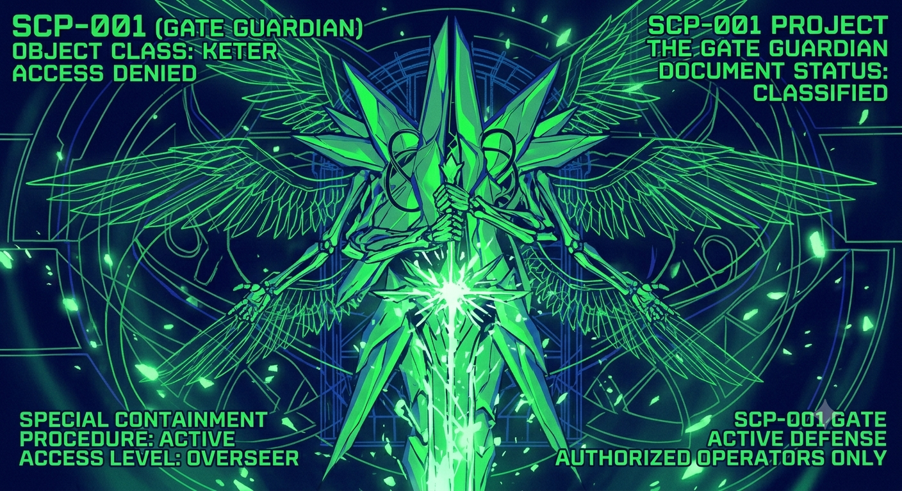

meu blog sobre scp-001
O Guardião do Portão (Proposta de Dr. Clef / Dr. Gears): Uma entidade humanoide gigante com asas e uma espada flamejante que bloqueia a entrada do Jardim do Éden.
O Sol (Proposta de S. D. Locke): Um cenário de fim de mundo onde a luz solar foi corrompida. Qualquer ser vivo exposto a ela tem o corpo derretido e se transforma em uma criatura de carne mutante.
O Prototipador: Uma máquina de metal capaz de alterar a realidade e que, teoricamente, foi o catalisador que criou todas as outras anomalias do universo